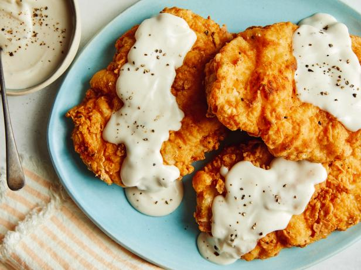

Recipe for the Crispiest Chicken Pane You'll Ever Try

Description
Deep fried chicken breasts that can be served with french fries, rice or any other side dish. Feeds 2 to 4 people. Can also be air-fryed
Ingredients
The following are the ingredients required for this recipe:
- Chicken breasts
- Seasonings:
- Paprika
- Garlic powder
- Chili powder
- Dried oregano
- Salt
- Black pepper
- Buttermilk
- Eggs
- Flour
Steps
- Slice chicken in half.
- Combine all seasonings, excluding salt, to make a seasoning blend.
- Add half of the seasoning blend in a large dish.
- Add the buttermilk, egg and 1 teaspoon of salt to the dish.
- Whisk well and place the chicken breasts into the mixture.
- Leave chicken to marinate for 30 min.
- Combine baking powder, 1 teaspoon of salt, cornstarch, flour and the seasoning blend in a large bowl
- Once chicken marinated, coat in the mixture we created above.
- Add oil to a large heavy-bottom saucepan. Heat oil till 176C.
- Carefully lower chicken into the saucepan.
- Leave for 4-5 minutes then take out of the saucepan.
- Put on a tissue to absorb oil from chicken.
- Consume the chicken, young one.